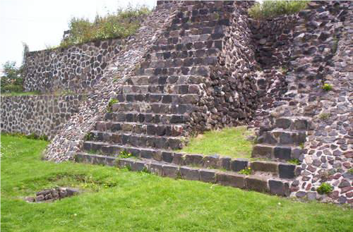

{% endblock %} {% block contenido %}

Acceso
Se llega a la Zona Arqueológica Los Reyes La Paz por la carretera México-Texcoco; en Los Reyes se toma hacia la derecha por la calle Prolongación Benito Juárez hasta la zona arqueológica.
Servicio disponible en la Zona Arqueológica Los Reyes La Paz
Visitas guiadas previa cita con el Centro INAH Estado de México.
Horario
Martes a domingo de 10 a 17 horas.
Contacto
Arqueólogo Responsable de la Zona Arqueológica Los Reyes La Paz
Arqlgo. Edgar Rosales de la Rosa
Correos electrónicos: cinah_edomex@inah.gob.mx / jorge_valencia@inah.gob.mx
Teléfonos: 01 (722) 215 – 7080 / 01 (722) 215 – 8569 / 01 (722) 213 – 9581. Ext. 198031.
Zona arqueología de los reyes acaquilpan video:
https://www.youtube.com/watch?v=xIzAbOSlZ3M
Zona de Ubicación:
En el municipio de la paz domina la arquitectura religiosa, se refleja a su máximo esplendor en la iglesia de Santa María Magdalena, ubicas en el pueblo del mismo nombre. Esta iglesia data del siglo XVI, aun conserva algunos de los elementos principales de su época. Tras una remoción en el año del 2006 la iglesia actualmente se mantiene como en su inicio.
De gran importancia también se encuentra la iglesia de San Sebastián chimalpa ubicada en el mismo poblado, esta contiene en su interior la pila bautismal labrada en piedra, de una sola pieza hecha en el siglo XVI. La iglesia de la cabecera municipal dedicada a los santos reyes, construida en el siglo de XVI de dimensiones pequeñas, para poca población.
El municipio de la paz posee una zona arqueológica en la cual se encontró vestigios de las culturas prehispánicas, estos restos se encuentran en lo que ahora es la colonia ampliación los reyes. A inicios de la década de 1970 fue descubierta por el arqueólogo Eduardo Contreras. Consiste en una pirámide principal y una pequeña área habitacional. La pirámide está orientada al poniente, por lo que el doctor Raúl García Chávez supone que estaba dedicada a Huitzilopochtli. El área habitacional se encuentra unida a la pirámide. Consiste en una serie de cuartos donde probablemente habitaron los sacerdotes; se conservan restos de pisos y muros, así como los fogones que se usaban para preparar alimentos.
{% endblock %}